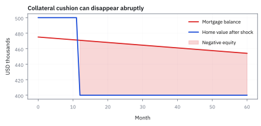
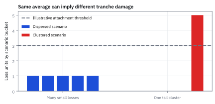
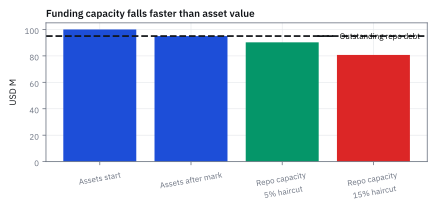
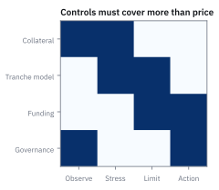
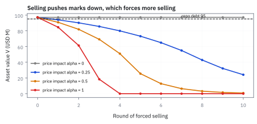

22.5 What 2007–2008 Actually Broke
ไม่ได้พังเพราะสูตรเดียว แต่เพราะทุกข้อต่อของโซ่ผูกกับราคาบ้านตัวเดียวกัน: ผู้กู้ที่กู้ใหม่ไม่ได้ pool ที่เสียพร้อมกัน ชั้น AAA ที่ทำจากชั้นกลาง และเงินกู้ระยะสั้นที่บังคับให้ขาย
ธนาคารลงทุนถือชั้นบนสุดของ CDO² ซึ่งได้อันดับ AAA และรับขาดทุนเกิน 30% ของหลักประกัน หลักประกันคือชั้น mezzanine 3%–7% ของ pool สินเชื่อ subprime 100 pool แต่ละ pool มีโอกาสผิดนัดตลอดอายุ 4% และเสีย 40% ของหนี้เมื่อผิดนัด ทีมที่ออกตราสารบอกว่า “ชั้น mezzanine แต่ละตัวมีโอกาสเริ่มเสียราว 11% และขาดทุนเฉลี่ยราว 3% ของชั้น พอรวม 100 ตัว ค่าเฉลี่ยจะนิ่ง ชั้นที่เริ่มเสียที่ 30% จึงไม่มีทางเสีย” ถ้าทุก pool ผูกกับราคาบ้านของทั้งประเทศตัวเดียวกัน โอกาสที่ชั้นนี้เริ่มเสียคือเท่าไร?
ลองตอบก่อนเปิดเฉลย
3.79% ถ้า 100 pool ไม่เกี่ยวกันจริง ขาดทุนเฉลี่ยของ 100 ชั้นจะนิ่งใกล้ 3.02% และโอกาสแตะ 30% ต่ำกว่า $10^{-33}$ ตามที่ทีมบอก แต่ถ้าทุก pool ขึ้นกับตัวแปรราคาบ้านตัวเดียว ชั้น mezzanine ทุกตัวเสียพร้อมกัน ชั้นบนสุดจะเสียทันทีที่แต่ละ pool ขาดทุนเกิน 4.2% ซึ่งมีโอกาส 3.79% ชั้น “AAA” นี้จึงเสี่ยงราวหนึ่งในสามของชั้น mezzanine ที่มันทำมาจาก ขั้นที่ 4 และ 5 คิดตัวเลขนี้
สิ่งที่เราจะสร้าง
สี่หน้าที่ผ่านมาสร้างโซ่ครบแล้ว: ค่างวดและหนี้ของสินเชื่อบ้าน (22.1) การคืนก่อนกำหนดผ่านการกู้ใหม่ (22.2) กติกาแบ่งเงินเป็นชั้น (22.3) และการแบ่งขาดทุนที่ขึ้นกับการผิดนัดพร้อมกัน (22.4) หน้านี้เดินโซ่นั้นในทิศที่มันพัง โดยใช้ตัวเลขทีละข้อต่อ
เราจะดูค่างวดที่กระโดดเมื่ออัตราโปรโมชันหมด ราคาบ้านที่ลดจนหนี้มากกว่าบ้าน ขาดทุนต่อหลังที่แย่ลงพร้อมโอกาสผิดนัด ขาดทุนของ pool เป็นฟังก์ชันของราคาบ้าน ชั้น AAA ของ CDO² ที่ทำจากชั้นกลาง แล้วจบที่เงินกู้ระยะสั้นที่ใช้ถือของเหล่านี้ ซึ่ง 24.2 จะขยายเป็นวงจรของทั้งตลาด
ศัพท์ที่ใช้ในหัวข้อนี้
- Subprime และ teaser rate
- สินเชื่อให้ผู้กู้ที่ประวัติเครดิตอ่อน จำนวนมากเป็นสินเชื่ออัตราลอยตัวที่เริ่มด้วยอัตราต่ำช่วงแรก (teaser) แล้วปรับขึ้น ผู้กู้มักวางแผนกู้ใหม่ก่อนอัตราปรับ
- Loan-to-value (LTV) และ negative equity
- LTV คือหนี้หารด้วยราคาบ้าน เมื่อ LTV เกิน 100% หนี้มากกว่าบ้าน (negative equity) ผู้กู้กู้ใหม่ไม่ได้ และขายบ้านแล้วก็ยังปิดหนี้ไม่หมด
- PD, LGD และ expected loss
- โอกาสผิดนัด สัดส่วนที่เสียเมื่อผิดนัด และค่าเฉลี่ยของขาดทุน ขาดทุนเฉลี่ยคือค่าเฉลี่ยของผลคูณ ไม่ใช่ผลคูณของค่าเฉลี่ย เมื่อสองตัวขยับพร้อมกัน
- ABS CDO และ CDO²
- CDO ที่หลักประกันคือชั้นของตราสาร securitization อื่น เช่นชั้น mezzanine ของ pool สินเชื่อบ้าน CDO² คือการแบ่งชั้นซ้ำจากชั้นที่แบ่งมาแล้ว
- Repo และ haircut
- Repo คือการกู้ระยะสั้นโดยวางหลักทรัพย์ค้ำ haircut คือส่วนของมูลค่าหลักประกันที่ผู้ให้กู้ไม่ให้กู้ ถ้า haircut ขึ้นหรือราคาหลักประกันลด ผู้กู้ต้องหาเงินหรือขายของ
- Fire sale
- การขายเร่งด่วนหลายรายพร้อมกันจนราคาต่ำกว่ามูลค่า ราคาที่ลดทำให้คนอื่นต้องขายต่อ
สัญลักษณ์และหน่วย
| สัญลักษณ์ | ความหมาย | หน่วย |
|---|---|---|
| $e_0,\ d$ | เงินดาวน์เป็นสัดส่วนของราคาบ้าน และสัดส่วนที่ราคาบ้านลด | สัดส่วน |
| $B_t,\ H_t,\ N_t$ | หนี้ค้าง ราคาบ้าน และเงินสุทธิจากการขายบ้านที่ถูกยึด | \$ |
| $\mathrm{PD},\ \mathrm{LGD}$ | โอกาสผิดนัด และสัดส่วนที่เสียเมื่อผิดนัด | สัดส่วน |
| $Y,\ \beta$ | ตัวแปรราคาบ้านของ pool หนึ่ง (normal มาตรฐาน ต่ำคือแย่) และสัดส่วนของ variance ที่มาจากราคาบ้านทั้งประเทศ | ไม่มีหน่วย |
| $L(Y),\ \ell(Y)$ | ขาดทุนของ pool และขาดทุนของชั้น mezzanine เป็นสัดส่วนของความหนา | สัดส่วน |
| $V,\ D,\ h$ | มูลค่าหลักประกัน หนี้ repo และ haircut | ล้าน \$, ล้าน \$, สัดส่วน |
| $x$ | มูลค่าที่ต้องขายเพื่อคืนหนี้ | ล้าน \$ |
ขั้นที่ 1 — อัตราโปรโมชันหมด: ค่างวดกระโดด
ข้อต่อแรกอยู่ที่ตัวสินเชื่อ สินเชื่อ subprime จำนวนมากเป็นแบบ 2/28: อัตราต่ำคงที่ 2 ปีแรกแล้วลอยตัวอีก 28 ปี ใช้สูตรค่างวดของ 22.1 คิดทั้งสองช่วง
โจทย์ให้อะไรมาบ้าง: สินเชื่อสมมติ \$200,000 ผ่อนแบบ 30 ปี อัตรา 7% ช่วง 24 เดือนแรก แล้วอัตราปรับเป็น 10% คิดค่างวดใหม่จากหนี้ที่เหลือกับ 336 งวดที่เหลือ
คำตอบ: ค่างวดขึ้นจาก \$1,330.60 เป็น \$1,738.54 หรือ +30.7% ทั้งที่หนี้ลดไปแค่ \$4,210.11 ใน 2 ปี ถ้าค่างวดเดิมกิน 38% ของรายได้ (สมมติ) ค่างวดใหม่จะกิน 49.6% ผู้กู้แบบนี้วางแผนกู้ใหม่ก่อนอัตราปรับ ซึ่งทำได้ก็ต่อเมื่อบ้านยังมีส่วนของเจ้าของเหลือพอให้ธนาคารใหม่ปล่อยกู้ ขั้นที่ 2 ดูว่าอะไรเกิดขึ้นเมื่อไม่เหลือ
ตรวจเองใน 10 วินาที: ถ้าอัตราไม่ปรับ คิดค่างวดใหม่ที่ 7% จาก \$195,789.89 กับ 336 งวดจะได้ \$1,330.60 เท่าเดิม (ตามขั้นที่ 5 ของ 22.1) ส่วนที่ขึ้นทั้งหมดจึงมาจากอัตรา
ขั้นที่ 2 — ราคาบ้านลด: หนี้มากกว่าบ้าน
ช่วงแรกของการผ่อน หนี้แทบไม่ลด (22.1 ขั้นที่ 5) ถ้าราคาบ้านลด อัตราส่วนหนี้ต่อราคาบ้านจึงพุ่ง ขั้นนี้หาว่าราคาลดเท่าไรหนี้จึงเกินบ้าน โดยประมาณว่าหนี้ยังเท่ายอดกู้
บรรทัดที่สามบอกว่าหนี้เกินบ้านทันทีที่ราคาลดมากกว่าเงินดาวน์ ผู้กู้ที่ดาวน์ 5% จึงติดลบตั้งแต่ราคาลดเกิน 5% และที่ราคาลด 20% (บรรทัดสุดท้าย $e_0=5\%,\ d=20\%$) หนี้เกินบ้าน 18.75% ผู้กู้คนนี้กู้ใหม่ไม่ได้ ขายบ้านก็ปิดหนี้ไม่หมด ถ้าค่างวดกระโดดตามขั้นที่ 1 ทางออกที่เหลือคือหยุดจ่าย
บ้านที่ถูกยึดขายได้ไม่ครบหนี้ ตัวอย่าง: บ้าน \$500,000 กู้ \$475,000 ผ่อนจนหนี้เหลือ \$465,000 ราคาบ้านลดเป็น \$400,000 (LTV 116.25%) ขายได้สุทธิหลังค่าใช้จ่าย \$380,000 ผู้ให้กู้เสีย \$85,000 หรือ LGD 18.28% ถ้าราคาไม่ลด ขาดทุนนี้แทบเป็นศูนย์
Figure 22.5a — LTV พุ่งเมื่อราคาบ้านลดเกินเงินดาวน์

แกนนอนคือราคาบ้านที่ลด 0% ถึง 40% แกนตั้งคือ LTV จากสูตร $(1-e_0)/(1-d)$ เส้นแดง ส้ม น้ำเงิน คือเงินดาวน์ 5%, 10% และ 20% เส้นประคือ LTV 100% ที่บ้านมีค่าเท่าหนี้พอดี แต่ละเส้นตัดเส้นประตรงที่ราคาลดเท่าเงินดาวน์ ป้ายชี้จุดดาวน์ 5% ราคาลด 20% ที่ LTV 118.75% ตามขั้นที่ 2 สูตรนี้ไม่นับเงินต้นที่ผ่อนไปแล้ว ซึ่งช่วงสองสามปีแรกมีน้อยมาก
ขั้นที่ 3 — โอกาสผิดนัดกับขาดทุนต่อหลังขึ้นพร้อมกัน
ขั้นที่ 2 บอกว่าราคาบ้านที่ลดทำให้ทั้งโอกาสผิดนัดสูงขึ้นและขาดทุนต่อหลังสูงขึ้น ขาดทุนเฉลี่ยของ pool จึงคิดโดยคูณค่าเฉลี่ยสองตัวแยกกันไม่ได้ ตามที่ 5.5 บอกว่า $E[XY]=E[X]E[Y]$ ใช้ได้เฉพาะเมื่อไม่มี covariance ขั้นนี้ใช้สองสถานการณ์สมมติ: ปกติ (โอกาส 90%) PD 1% LGD 15% และวิกฤต (โอกาส 10%) PD 15% LGD 60%
เขียน $p$ แทน PD และ $g$ แทน LGD ให้สั้น บรรทัดแรกคือนิยามของ covariance เขียนกลับด้าน บรรทัดสุดท้ายเฉลี่ยผลคูณของแต่ละสถานการณ์: $0.9(1\%)(15\%)=0.135\%$ และ $0.1(15\%)(60\%)=0.900\%$ ผลต่าง 0.567% คือ covariance ขาดทุนเฉลี่ยจริงเป็น 2.21 เท่าของการคูณค่าเฉลี่ย และเก้าในสิบของมันมาจากสถานการณ์วิกฤตที่เกิดแค่ 10%
Figure 22.5b — คูณค่าเฉลี่ยกับเฉลี่ยผลคูณ

แกนตั้งคือขาดทุนเฉลี่ยเป็นเปอร์เซ็นต์ของยอดที่เสี่ยง แท่งเทาคือการคูณค่าเฉลี่ย $2.4\%\times19.5\%=0.468\%$ แท่งขวาซ้อนส่วนของสถานการณ์ปกติ 0.135% (น้ำเงิน) กับวิกฤต 0.900% (แดง) รวม 1.035% ตามขั้นที่ 3
ขั้นที่ 4 — ขาดทุนของ pool เป็นฟังก์ชันของราคาบ้าน
ตอนนี้ขยับจากบ้านหลังเดียวเป็น pool ใช้แบบจำลองปัจจัยเดียวของ 22.4 โดยให้ปัจจัยของ pool คือตัวแปรราคาบ้าน $Y$ ถ้า pool มีสินเชื่อหลายพันหลัง เมื่อรู้ $Y$ แล้ว สัดส่วนที่ผิดนัดจะเท่ากับโอกาสผิดนัดแบบมีเงื่อนไขพอดี (กฎของจำนวนมาก) ขาดทุนของ pool จึงเป็นฟังก์ชันของ $Y$ ตัวเดียว ตัวเลขสมมติ: PD ตลอดอายุ 4% LGD 40% และ $\rho=0.1$
ขาดทุนเฉลี่ยของ pool คือ $4\%\times40\%=1.6\%$ แต่ขาดทุนของ pool หนึ่ง ๆ ขึ้นกับว่าราคาบ้านของมันแย่แค่ไหน ชั้น mezzanine 3%–7% เริ่มเสียเมื่อ $Y\lt-1.2176$ ซึ่งมีโอกาส $\Phi(-1.2176)=11.17\%$ และเสียหมดเมื่อ $Y\lt-2.7324$ ซึ่งมีโอกาส 0.314% ขาดทุนเฉลี่ยของชั้น $E[\ell(Y)]=3.02\%$ ของความหนา ตัวเลขเหล่านี้เป็นของชั้นเดียว ยังไม่ได้บอกว่าชั้นหลายตัวเสียพร้อมกันแค่ไหน
ขั้นที่ 5 — CDO² จากชั้น mezzanine 100 ตัว: ความเป็นอิสระคือสมมติฐานทั้งหมด
CDO² ของโจทย์รวมชั้น mezzanine ของ 100 pool เท่า ๆ กัน ชั้นบนสุดเสียเมื่อขาดทุนเฉลี่ยของ 100 ชั้นเกิน 30% คำถามคือ 100 pool เกี่ยวกันแค่ไหน ให้ตัวแปรราคาบ้านของ pool ที่ $j$ มีส่วนร่วมระดับประเทศ $M$ และส่วนของภูมิภาค $Z_j$
โจทย์ให้อะไรมาบ้าง: $Y_j=\sqrt\beta\,M+\sqrt{1-\beta}\,Z_j$ ทุกตัวเป็น normal มาตรฐานอิสระกัน pool และชั้นตามขั้นที่ 4 เมื่อรู้ $M$ ชั้น 100 ตัวอิสระกัน ขาดทุนเฉลี่ยของ 100 ชั้น $\bar\ell$ จึงเข้าใกล้ $E[\ell(Y_j)\mid M]$ ชั้นบนสุดเสียเมื่อ $\bar\ell\ge30\%$
คำตอบ: ถ้าทุก pool ผูกกับราคาบ้านทั้งประเทศตัวเดียว ($\beta=1$) ชั้น mezzanine ทั้ง 100 ตัวเสียพร้อมกันเป็นตัวเดียว ชั้นบนสุดเสียเมื่อชั้น mezzanine เสียเกิน 30% ของความหนา คือเมื่อ pool ขาดทุนเกิน $3\%+0.3(4\%)=4.2\%$ ซึ่งมีโอกาส 3.79% เทียบกับโอกาสเริ่มเสียของชั้น mezzanine เอง 11.17% ชั้นที่ได้ AAA จึงเสี่ยงราวหนึ่งในสามของวัตถุดิบ
ตรวจเองใน 10 วินาที: ที่ $\beta=0$ ส่วนเบี่ยงเบนมาตรฐานของชั้นเดียวคือ 11.93% หารด้วย $\sqrt{100}$ ได้ 1.19% จุด 30% อยู่ห่างค่าเฉลี่ย 3.02% ราว 23 เท่าของส่วนเบี่ยงเบน ส่วน $10^{-33}$ มาจากขอบเขตแบบ Chernoff ของค่าเฉลี่ย 100 ตัว
ตัวเลขระหว่างกลางสำคัญที่สุด: แค่ให้ราคาบ้านทั้งประเทศมีส่วนครึ่งหนึ่งของ variance ($\beta=0.5$) โอกาสก็ขึ้นจากแทบศูนย์เป็น 1.13% การกระจาย 100 pool ช่วยได้เฉพาะส่วนที่ไม่ร่วมกัน และราคาบ้านทั้งประเทศที่ลดพร้อมกันคือส่วนที่ร่วมกัน
ขั้นที่ 6 — เงินกู้ระยะสั้น: ขาดทุนบนกระดาษกลายเป็นการขาย
ชั้น AAA ส่วนใหญ่ไม่ได้ถือด้วยเงินของตัวเอง แต่ถือด้วย repo ระยะสั้น ถ้าธนาคารถือชั้น AAA มูลค่า \$100 ล้าน กู้ repo \$95 ล้านที่ haircut 5% หนี้ต้องไม่เกิน $(1-h)$ เท่าของมูลค่าหลักประกัน ถ้าเกิน ต้องขายของไปคืนหนี้ และการขาย \$1 ลดทั้งหนี้และหลักประกัน
บรรทัดที่สองได้จากกระจายวงเล็บแล้วย้าย $x$ ไปข้างเดียว การขาย \$1 ลดหนี้ \$1 แต่ลดวงเงินกู้ $(1-h)$ ดอลลาร์ ช่องว่างจึงแคบลงแค่ $h$ ดอลลาร์ต่อการขาย \$1 สูตรนี้คือสูตรขายบังคับที่ 24.2 ใช้กับกองทุนที่มี margin $m$ (แทน $h$ ด้วย $m$) เพราะ $D-(1-h)V=hV-E$ เมื่อ $E=V-D$
ราคา AAA ลดแค่ 3% ธนาคารต้องขาย \$57 ล้านจาก \$97 ล้าน และถ้าผู้ให้กู้ขึ้น haircut เป็น 15% พร้อมกัน ต้องขาย \$83.67 ล้าน หรือ 86.3% ของที่ถือ ในปี 2007–2008 haircut ของหลักประกันที่เป็นตราสาร securitization ขึ้นจากเกือบศูนย์เป็นหลายสิบเปอร์เซ็นต์ และบางประเภทผู้ให้กู้ไม่รับเลย
Figure 22.5c — วงเงินกู้ลดเร็วกว่ามูลค่าหลักประกัน

หน่วยล้านดอลลาร์ แท่งแรกคือหลักประกันตอนเริ่ม 100 แท่งที่สองคือหลังราคาลด 5% เหลือ 95 แท่งที่สามและสี่คือวงเงินกู้บนหลักประกัน 95 ที่ haircut 5% ($0.95\times95=90.25$) และ 15% ($0.85\times95=80.75$) เส้นประคือหนี้ repo 95 ที่ค้างอยู่ รูปนี้ใช้ราคาลด 5% ซึ่งทำให้เงินของธนาคารเป็นศูนย์พอดี ช่องว่างจึงเป็น 4.75 และ 14.25 ตามลำดับ
Figure 22.5d — haircut ที่สูงขึ้นบังคับขายเกือบทั้งหมด

แกนนอนคือ haircut 0.5% ถึง 30% แกนตั้งคือ $x$ ของขั้นที่ 6 (ไม่เกินมูลค่าที่ถือ) หนี้ 95 เส้นน้ำเงิน ส้ม แดง คือหลักประกัน 100, 97 และ 95 ที่ haircut 15% ต้องขาย 66.67 และ 83.67 ตามป้าย ส่วนที่ 95 ต้องขายทั้งหมดทุก haircut เพราะเงินของธนาคารเป็นศูนย์แล้ว เส้น 100 เป็นศูนย์จนถึง haircut 5% เพราะหนี้ 95 ยังอยู่ในวงเงิน
ขั้นที่ 7 — การขายกดราคา แล้วราคาก็บังคับให้ขายอีก
ขั้นที่ 6 สมมติว่าขายได้ที่ราคาเดิม แต่ถ้าผู้ถือหลายรายต้องขายของแบบเดียวกันพร้อมกัน ราคาจะลดลง ขั้นนี้ใช้แบบจำลองย่อที่หยาบโดยตั้งใจ เพื่อแสดงว่าวงจรนี้มีอยู่ ไม่ใช่เพื่อพยากรณ์: ให้แรงกดดันแต่ละรอบเป็นช่องว่างเทียบกับมูลค่า แล้วให้ราคาลดตามแรงกดดันคูณ $\alpha$
เริ่มที่ $V=97$ หนี้ 95 haircut 15% แรงกดดันรอบแรกคือ $12.55/97=12.94\%$ ราคาลดครึ่งหนึ่งของนั้น แล้วช่องว่างก็กว้างขึ้นเพราะหนี้ยังเท่าเดิม ใน 4 รอบมูลค่าเหลือราวครึ่ง แบบจำลองนี้ไม่ได้ลดหนี้ตามการขาย จึงเกินจริงด้านร้าย แต่ทิศถูก: ราคาที่ลดสร้างการขาย และการขายสร้างราคาที่ลด 24.2 เล่าวงจรเดียวกันในภาพของทั้งตลาด
Figure 22.5e — ยิ่งการขายกดราคามาก วงจรยิ่งกินเร็ว

แกนนอนคือรอบที่ 0 ถึง 10 แกนตั้งคือมูลค่าหลักประกัน (ล้านดอลลาร์) ตามขั้นที่ 7 เริ่มที่ 97 หนี้ 95 (เส้นประ) haircut 15% เส้นเทาคือ $\alpha=0$ มูลค่าคงที่ เส้นน้ำเงิน $\alpha=0.25$ เหลือ 24.07 หลัง 10 รอบ เส้นส้ม $\alpha=0.5$ ผ่าน 50.88 ในรอบที่ 4 เส้นแดง $\alpha=1$ เป็นศูนย์ในรอบที่ 4
โซ่ที่พัง: แต่ละข้อต่อสมมติอะไร และตัวเลขในหน้านี้
| ข้อต่อ | สิ่งที่แบบจำลองหรือคนสมมติ | สิ่งที่เกิดเมื่อราคาบ้านลด |
|---|---|---|
| ผู้กู้ (ขั้นที่ 1–2) | กู้ใหม่ได้ก่อนอัตราปรับ | LTV 118.75% กู้ใหม่ไม่ได้ ค่างวด +30.7% |
| ขาดทุนต่อหลัง (ขั้นที่ 3) | PD กับ LGD ไม่เกี่ยวกัน | ขาดทุนเฉลี่ย 1.035% ไม่ใช่ 0.468% |
| ชั้นของ pool (ขั้นที่ 4) | ชั้น mezzanine เสียยาก | เสียเมื่อ pool ขาดทุนเกิน 3% (11.17%) |
| CDO² (ขั้นที่ 5) | 100 pool กระจายความเสี่ยงกัน | ราคาบ้านร่วมกันทั้งประเทศ: AAA เสีย 3.79% |
| เงินกู้ที่ใช้ถือ (ขั้นที่ 6–7) | ขายได้ที่ราคาเดิม haircut คงที่ | ราคาลด 3% บังคับขาย 57 ถึง 83.67 จาก 97 |
คำถามที่ควรถามออกมาดัง ๆ
ทำไมไม่มีใครในโซ่หยุดมันก่อน? แทบทุกคนได้เงินตอนสินเชื่อถูกปล่อยและขายต่อ ไม่ใช่ตอนที่มันถูกจ่ายคืน: นายหน้าได้ค่าธรรมเนียมต่อสินเชื่อ ผู้ปล่อยกู้ขายสินเชื่อออกไปทำ securitization ผู้จัดตั้งได้ค่าธรรมเนียมต่อ deal และบริษัทจัดอันดับได้ค่าจ้างจากผู้ออกตราสาร ความเสี่ยงถูกส่งต่อเร็วกว่าที่ใครต้องรับมันไว้เอง
Gaussian copula ผิดหรือ? สูตรในขั้นที่ 4 และ 5 คำนวณถูกภายใต้สมมติฐานของมัน สิ่งที่ผิดคือตัวเลขที่ใส่ ($\beta$ และ $\rho$ ที่ปรับจากช่วงที่ราคาบ้านขึ้นทุกปี) และการไม่ถามว่าถ้าตัวเลขนั้นผิด ชั้นไหนเจ็บ ขั้นที่ 5 แสดงว่าคำตอบเปลี่ยนจากแทบศูนย์เป็น 3.79% ด้วยตัวเลขตัวเดียว
ตรวจ CDO² ด้วยมือได้ไหม? แทบไม่ได้ เอกสารของชั้น mezzanine แต่ละตัวยาวราว 150 หน้า CDO² ที่มีหลักประกัน 100 ตัวจึงต้องอ่านราว $100\times150=15{,}000$ หน้า และสินเชื่อก้อนเดียวกันยังโผล่ซ้ำใน pool ของหลาย deal ความเสี่ยงจึงกระจุกกว่าที่รายชื่อหลักประกันบอก
ความผิดที่ให้คำตอบผิดแบบเงียบ ๆ
นับการกระจายตัวข้ามสิ่งที่ผูกกับปัจจัยเดียวกัน: 100 pool ที่ผูกกับราคาบ้านทั้งประเทศไม่ได้ให้ความปลอดภัยแบบ 100 ตัวที่อิสระกัน ความน่าจะเป็นต่างกันจาก $10^{-33}$ เป็น 3.79%
คูณค่าเฉลี่ยของ PD กับ LGD: ได้ 0.468% แทน 1.035% ต่ำไปกว่าครึ่ง และส่วนที่หายคือส่วนที่เกิดในวิกฤต
เทียบราคาที่ลดกับ haircut ตรง ๆ: ราคาลด 3% น้อยกว่า haircut 5% แต่ธนาคารที่ใช้วงเงินเต็มต้องขาย \$57 ล้าน เพราะทุกดอลลาร์ของช่องว่างต้องขาย $1/h=20$ ดอลลาร์
ใช้ข้อมูลย้อนหลังจากช่วงที่ราคาบ้านขึ้นทุกปี: ช่วงนั้นผู้กู้ที่มีปัญหาขายบ้านได้กำไรหรือกู้ใหม่ได้ การผิดนัดจึงต่ำและไม่เกาะกัน ตัวเลขที่ได้คือของโลกที่ไม่มีขั้นที่ 2
ใช้ทำอะไรบนโต๊ะจริง
ความเสี่ยงของตราสาร securitization ต้องทดสอบด้วยปัจจัยร่วมที่ตั้งเป็นสถานการณ์ เช่นราคาบ้านทั้งประเทศลด 20% แล้วเดินผลผ่านทุกข้อต่อ: ความเร็วการคืนก่อน (22.2) การผิดนัดและ LGD (ขั้นที่ 2–3) waterfall ของแต่ละชั้น (22.3–22.4) และเงินกู้ที่ใช้ถือ (ขั้นที่ 6) หลังวิกฤต Dodd–Frank กำหนดให้ผู้ทำ securitization ถือความเสี่ยงของตราสารที่ตัวเองออกไว้อย่างน้อย 5% เพื่อให้ผู้ส่งต่อความเสี่ยงต้องรับผลส่วนหนึ่งเอง
สามโจทย์ตรวจความเข้าใจ
1. ผู้กู้ดาวน์ 10% ราคาบ้านลด 25% LTV เป็นเท่าไร และราคาต้องลดเท่าไรหนี้จึงเท่ากับบ้าน?
เฉลย
$\mathrm{LTV}=0.90/0.75=120\%$ หนี้เท่ากับบ้านเมื่อราคาลดเท่าเงินดาวน์ คือ 10% ตามบรรทัดที่สามของขั้นที่ 2
2. สองสถานการณ์: ปกติ (80%) PD 2% LGD 20% และวิกฤต (20%) PD 10% LGD 50% ขาดทุนเฉลี่ยจริงกับการคูณค่าเฉลี่ยต่างกันเท่าไร?
เฉลย
$E[\mathrm{PD}]=0.8(2\%)+0.2(10\%)=3.6\%$ $E[\mathrm{LGD}]=0.8(20\%)+0.2(50\%)=26\%$ คูณกันได้ 0.936% เฉลี่ยผลคูณได้ $0.8(2\%)(20\%)+0.2(10\%)(50\%)=0.32\%+1.00\%=1.32\%$ covariance คือ 0.384%
3. ถือหลักประกัน \$100 ล้านด้วย repo \$90 ล้าน (haircut 10% เต็มวงเงิน) ราคาลด 5% และ haircut ขึ้นเป็น 20% ต้องขายเท่าไร?
เฉลย
ช่องว่าง $90-0.8(95)=14$ ต้องขาย $14/0.2=\$70$ ล้าน ตรวจ: หลังขาย หนี้ 20 หลักประกัน 25 วงเงิน $0.8(25)=20$ พอดี
คำนวณซ้ำด้วย JavaScript
โค้ดนี้คิดค่างวดก่อนและหลังอัตราปรับ LTV และ LGD ขาดทุนเฉลี่ยของสองสถานการณ์ ขาดทุนของ pool และของชั้น mezzanine ตามตัวแปรราคาบ้าน โอกาสที่ชั้นบนสุดของ CDO² เสียเมื่อ pool ผูกกันต่างระดับ พร้อมขอบเขต Chernoff ของกรณีอิสระ การขายบังคับตาม haircut และวงจรขายกดราคา แล้วพิมพ์ตัวเลขหลักออกมาหนึ่งบรรทัด
const {sqrt, exp, log, abs, PI, min, max} = Math;
function num(name, x) {
if (typeof x !== 'number' || !Number.isFinite(x)) throw new TypeError(`${name} must be a finite number`);
return x;
}
const pdf = x => exp(-x * x / 2) / sqrt(2 * PI);
function Phi(x) {
if (abs(num('x', x)) < 3) {
let term = x, sum = x;
for (let n = 1; n < 200 && abs(term) > 1e-17 * abs(sum); n++) { term *= x * x / (2 * n + 1); sum += term; }
return 0.5 + pdf(x) * sum;
}
const z = abs(x); let f = z;
for (let k = 300; k >= 1; k--) f = z + k / f;
return x > 0 ? 1 - pdf(z) / f : pdf(z) / f;
}
function PhiInv(p) {
if (!(num('p', p) > 0 && p < 1)) throw new RangeError('p must be strictly between 0 and 1');
let x = 0;
for (let i = 0; i < 100; i++) { const dx = (Phi(x) - p) / pdf(x); x -= dx; if (abs(dx) < 1e-15) break; }
return x;
}
const payment = (B, c, n) => B * (c / 12) / (1 - (1 + c / 12) ** -n);
// Large pool: loss fraction given the house-price factor y, and the mezzanine tranche [a, b] as a share of its thickness.
function poolModel(pd, lgd, rho, a = 0.03, b = 0.07) {
if (!(num('rho', rho) > 0 && rho < 1)) throw new RangeError('rho must be strictly between 0 and 1');
if (!(num('lgd', lgd) > 0 && lgd <= 1)) throw new RangeError('lgd must be in (0, 1]');
const c = PhiInv(pd);
const loss = y => lgd * Phi((c - sqrt(rho) * y) / sqrt(1 - rho));
const tranche = y => min(max(loss(y) - a, 0), b - a) / (b - a);
const yAt = x => (c - sqrt(1 - rho) * PhiInv(x / lgd)) / sqrt(rho); // loss(yAt(x)) = x
return {c, loss, tranche, yAt};
}
const expectNormal = (f, h = 0.002, lim = 10) => { let s = 0; for (let y = -lim; y <= lim; y += h) s += h * pdf(y) * f(y); return s; };
// P(average mezzanine loss of many pools exceeds k) when pools share a national factor with weight beta.
function seniorHit(model, beta, k) {
if (!(num('beta', beta) > 0 && beta <= 1)) throw new RangeError('beta must be in (0, 1]');
const g = M => beta === 1 ? model.tranche(M) : expectNormal(z => model.tranche(sqrt(beta) * M + sqrt(1 - beta) * z), 0.01, 9);
let lo = -12, hi = 12; // g falls as M rises: find g(M*) = k
for (let i = 0; i < 70; i++) { const mid = (lo + hi) / 2; if (g(mid) > k) lo = mid; else hi = mid; }
return Phi(lo);
}
// Chernoff bound on P(average of n independent tranche losses >= k): exp(-n sup_t [t k - log E e^(t l)]).
function chernoffLog10(model, n, k) {
const rate = t => t * k - log(expectNormal(y => exp(t * model.tranche(y))));
let lo = 0, hi = 60;
for (let i = 0; i < 60; i++) { const m1 = lo + (hi - lo) / 3, m2 = hi - (hi - lo) / 3; if (rate(m1) < rate(m2)) lo = m1; else hi = m2; }
return -n * rate((lo + hi) / 2) / Math.LN10;
}
// Repo: assets that must be sold (proceeds repay debt) to bring debt back under (1 - h) of collateral.
function forcedSale(V, D, h) {
if (!(num('h', h) > 0 && h < 1)) throw new RangeError('haircut must be strictly between 0 and 1');
return min(max(num('D', D) - (1 - h) * num('V', V), 0) / h, V);
}
function fireSale(alpha, V = 97, D = 95, h = 0.15, rounds = 10) {
const path = [V];
for (let i = 0; i < rounds; i++) {
const v = path[i], q = v > 0 ? min(max((D - (1 - h) * v) / v, 0), 1) : 0;
path.push(v * (1 - alpha * q));
}
return path;
}
let B24 = 200000; const A1 = payment(200000, 0.07, 360);
for (let t = 0; t < 24; t++) B24 = B24 * (1 + 0.07 / 12) - A1;
const model = poolModel(0.04, 0.4, 0.1);
const ETL = expectNormal(model.tranche), ETL2 = expectNormal(y => model.tranche(y) ** 2);
console.log(JSON.stringify({
teaser: {A1, B24, A2: payment(B24, 0.10, 336), same: payment(B24, 0.07, 336)},
ltv: [(1 - 0.05) / (1 - 0.20), 465000 / 400000, (465000 - 380000) / 465000],
pdlgd: {EPD: 0.9 * 0.01 + 0.1 * 0.15, ELGD: 0.9 * 0.15 + 0.1 * 0.60, product: 0.9 * 0.01 * 0.15 + 0.1 * 0.15 * 0.60},
pool: {c: model.c, L0: model.loss(0), Lm2: model.loss(-2), y3: model.yAt(0.03), y7: model.yAt(0.07), y42: model.yAt(0.042),
hit: Phi(model.yAt(0.03)), wipe: Phi(model.yAt(0.07)), ETL, sd: sqrt(ETL2 - ETL * ETL)},
cdo2: {beta1: seniorHit(model, 1, 0.3), beta05: seniorHit(model, 0.5, 0.3), beta025: seniorHit(model, 0.25, 0.3),
independentLog10: chernoffLog10(model, 100, 0.3)},
sale: [forcedSale(97, 95, 0.05), forcedSale(97, 95, 0.15), forcedSale(100, 95, 0.15), forcedSale(95, 95, 0.15)],
spiral: [0.25, 0.5, 1].map(a => fireSale(a))
}));ที่มาที่ไป
ราคาบ้านในสหรัฐฯ ขึ้นต่อเนื่องจนถึงราวปี 2006 แล้วเริ่มลด การผิดนัดของสินเชื่อ subprime เพิ่มเร็วในปี 2007 ตามด้วยการลดอันดับชั้นของ MBS และ CDO จำนวนมาก เดือนมีนาคม 2008 Bear Stearns ถูกขายให้ JPMorgan โดยมีธนาคารกลางช่วย เดือนกันยายน 2008 Fannie Mae และ Freddie Mac ถูกรัฐเข้าควบคุม และ Lehman Brothers ล้มละลายในวันที่ 15 กันยายน ทุกข้อต่อในตารางข้างบนเกิดจริงในช่วงนั้น แต่การมองย้อนหลังทำให้โซ่ดูชัดกว่าตอนที่มันกำลังเกิด
ข้อจำกัด: วิธีนี้สมมติอะไร และของจริงเป็นอย่างไร
| สมมติอะไร | ของจริง | ผลเวลาใช้งาน |
|---|---|---|
| pool ใหญ่พอที่สัดส่วนผิดนัดเท่ากับโอกาสแบบมีเงื่อนไข | pool มีหลายพันหลังแต่ไม่อนันต์ | ความผันผวนของ pool จริงสูงกว่าเล็กน้อย |
| ตัวเลข PD 4% LGD 40% $\rho=0.1$ และ $\beta$ รู้แน่ | ทั้งหมดเป็นตัวประมาณ และ LGD ขึ้นตามราคาบ้าน (ขั้นที่ 3) | ต้องรายงานผลตามช่วงของ $\beta$ ไม่ใช่ค่าเดียว |
| วงจรขายในขั้นที่ 7 ไม่ลดหนี้ | การขายคืนหนี้ด้วย | ใช้ดูทิศและความไวต่อ $\alpha$ ไม่ใช่ขนาดของขาดทุน |
สิ่งที่ควรตอบได้หลังอ่าน
- อัตราโปรโมชันที่หมดทำให้ค่างวดกระโดด (+30.7% ในตัวอย่าง) และทางหนีคือกู้ใหม่ ซึ่งต้องมีส่วนของเจ้าของในบ้าน
- หนี้เกินบ้านทันทีที่ราคาลดเกินเงินดาวน์ (ดาวน์ 5% ราคาลด 20%: LTV 118.75%) และขาดทุนต่อหลังแย่ลงพร้อมกัน
- ขาดทุนเฉลี่ยคือค่าเฉลี่ยของผลคูณ: 1.035% ไม่ใช่ 0.468% เมื่อ PD กับ LGD ขึ้นพร้อมกัน
- ชั้น AAA ของ CDO² ปลอดภัยเฉพาะเมื่อ pool อิสระกัน ถ้าผูกกับราคาบ้านตัวเดียว โอกาสเสียเป็น 3.79% ไม่ใช่ต่ำกว่า $10^{-33}$
- ขาดทุนบนกระดาษของของที่ถือด้วย repo กลายเป็นการขาย $1/h$ เท่าของช่องว่าง และการขายพร้อมกันกดราคาต่อ
บทที่ 23 เปลี่ยนเรื่องไปที่ real options และ dynamic programming ส่วนวงจรเงินกู้กับการขายบังคับของหน้านี้ 24.2 จะกลับมาขยายเป็นภาพของทั้งตลาด